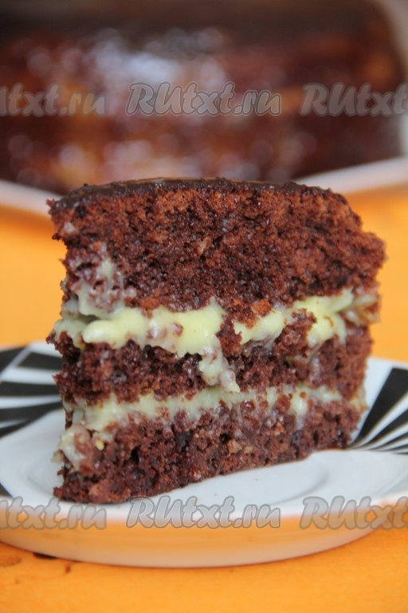

Сумасшедший пирог "Crazy Cake"

Crazy Cake - это американский пирог, в переводе звучит как "Сумасшедший торт (пирог)". Его
придумали в США в период дефицита. Данный пирог имеет необыкновенный вкус, несмотря на свой простой состав. В нём
отсутствует масло, но блюдо совершенно не уступает по вкусовым качествам тортам, которые в своем составе имеют этот
ингредиент.
Ингредиенты
Для приготовления сумасшедшего пирога "Crazy Cake" нам понадобится:
Для бисквита:
- 2 стакана молока;
- 2 стакана муки;
- 1,5 стакана сахара;
- 6 ст. л. какао;
- 4 ч. л. разрыхлителя.
Для крема:
- 2 стакана молока;
- 1 стакан сахара;
- 3 ст. л. муки;
- 1 яйцо.
Этапы приготовления
- Смешать все сухие ингредиенты входящие в состав бисквита: муку, сахар, какао и разрыхлитель.
- Сухие ингредиенты залить теплым молоком и слегка перемешать, взбивать долго не нужно.
- Вылить тесто в форму для выпекания, выпекать 40 минут при температуре 180 градусов.
-
Для приготовления крема в отдельной кастрюльке вскипятить молоко. В миске взбить яйцо с сахаром и мукой, в
полученную массу влить горячее молоко и отправить на огонь. При постоянном помешивании довести крем до
кипения и нужной консистенции.
-
Приготовленный шоколадный бисквит разделить на 2 или 3 коржа, смазать их теплым кремом. Украсить вкусный
сумасшедший пирог "Crazy Cake" по своему усмотрению.
Приятного аппетита!
Наверх
На главную